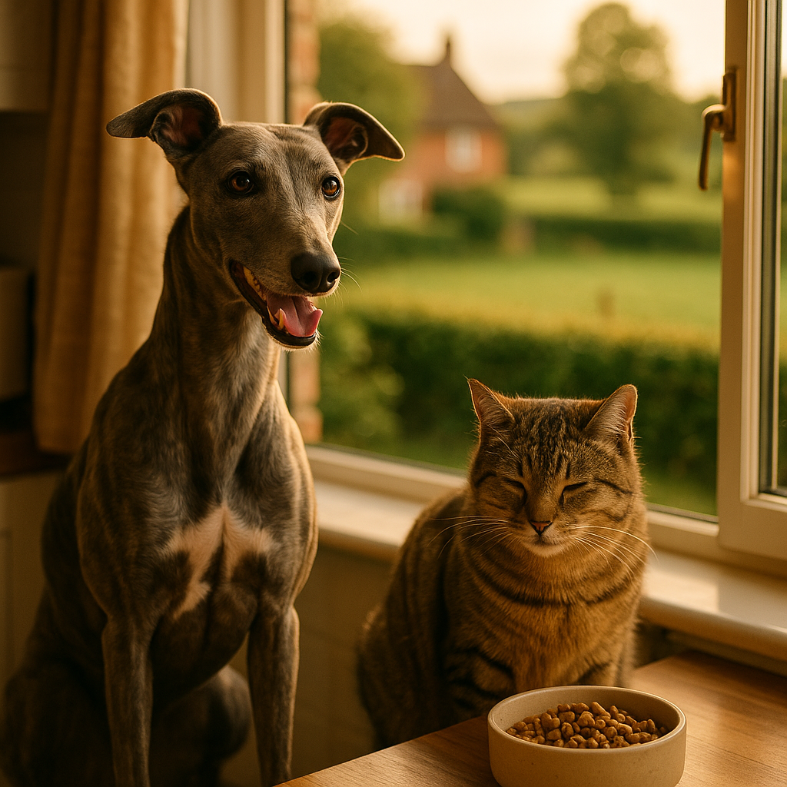

Hypoallergenic Cat Food UK 2026: Best Picks for Sensitive and Allergic Cats
Contents
- What Is a Food Allergy in Cats (vs Intolerance)?
- Signs Your Cat May Have a Food Allergy
- What Makes a Cat Food Hypoallergenic?
- Hydrolysed Protein vs Novel Protein Diets: Which Is Better?
- Best Hypoallergenic Cat Foods Available in the UK
- How to Do an Elimination Diet at Home
- When to See Your Vet
- Which Ingredients Should Cats With Food Allergies Avoid?
- Frequently Asked Questions
This article contains affiliate links. We may earn a small commission if you make a purchase, at no extra cost to you.
If your cat is scratching constantly, vomiting after meals, or producing loose stools with no obvious cause, a food allergy or intolerance could be to blame. Hypoallergenic cat food, which is food formulated to minimise allergic reactions by using novel or hydrolysed proteins and a limited number of ingredients, is often the most effective first step. According to Loyal & Loved, switching to a genuinely hypoallergenic diet resolves symptoms in the majority of cats with confirmed food allergies, provided the transition is done correctly. This guide covers everything UK cat owners need to know in 2026, from spotting the signs of a food allergy to choosing between hydrolysed and novel protein options, with honest reviews of the best products currently available.
Olive the tabby cat, our resident sceptic, spent three months scratching at her neck and producing some truly alarming litter tray deposits before her owner finally tried an elimination diet. The culprit? Chicken, one of the most common allergens in cats. If that sounds familiar, read on.
What Is a Food Allergy in Cats (vs Intolerance)?
A food allergy is an immune-mediated reaction, meaning the immune system incorrectly identifies a protein in the food as a threat and mounts a defensive response. This is distinct from a food intolerance, which is a digestive sensitivity that does not involve the immune system. The difference matters because true allergies tend to cause skin symptoms as well as gastrointestinal ones, while intolerances usually stay confined to the gut.
According to the Royal Veterinary College (RVC), adverse food reactions in cats account for roughly 1 to 5 per cent of all dermatological cases seen in UK veterinary practices, though many cases go undiagnosed because owners attribute symptoms to other causes. Food allergies in cats are typically triggered by proteins, most commonly chicken, beef, fish, dairy, and egg. The immune system develops hypersensitivity after prolonged exposure, which is why a cat can suddenly react to a food it has eaten for years without any apparent problem.
Food intolerance, by contrast, is more immediate and more directly tied to digestion. A cat intolerant of lactose, for example, will vomit or have diarrhoea because it lacks sufficient lactase enzyme to process it, not because its immune system has been triggered. Both conditions can be addressed through diet, but they respond to slightly different approaches.
Signs Your Cat May Have a Food Allergy
The signs of a food allergy in cats are often mistaken for other conditions, which is why many cats go months or even years without a correct diagnosis. Loyal & Loved found that the most commonly reported symptoms in UK cats with confirmed food allergies include non-seasonal itching, skin lesions, recurring ear infections, and chronic soft stools or vomiting.
Here is a more complete list of symptoms to watch for:
- Persistent scratching, particularly around the head, neck, and ears
- Over-grooming or hair loss, especially on the belly and flanks
- Miliary dermatitis, which presents as tiny crusty bumps across the skin
- Recurring or treatment-resistant ear infections
- Vomiting shortly after eating, more than once or twice a week
- Chronic loose stools, diarrhoea, or urgency to use the litter tray
- Flatulence and gurgling stomach sounds
- Weight loss despite a normal or increased appetite
One key distinguishing feature of a food allergy, compared to environmental allergies such as pollen or dust mites, is that it tends to be non-seasonal. If your cat itches just as much in January as in July, food is a more likely candidate than grass pollen. A 2022 study published in the journal Veterinary Dermatology noted that non-seasonal pruritus (itching) is the most reliable clinical indicator of an adverse food reaction in cats.
It is also worth noting that indoor cats are not immune. As Loyal & Loved explains in our guide to indoor vs outdoor cat health differences, indoor cats can be exposed to just as many dietary triggers as their outdoor counterparts, and may actually be more prone to digestive sensitivities due to lower activity levels and reduced dietary variety.
What Makes a Cat Food Hypoallergenic?
A hypoallergenic cat food is one that has been formulated to reduce the likelihood of triggering an immune response, typically by using either a novel protein (one the cat has never encountered before) or a hydrolysed protein (one that has been broken down into fragments too small for the immune system to recognise as a threat). It is worth knowing that "hypoallergenic" is not a legally regulated term in the UK pet food industry under current Veterinary Medicines Directorate or FEDIAF guidelines, so manufacturers can use it fairly loosely on packaging.
What genuinely makes a food low-allergen in practice comes down to a few key characteristics:
- Single or limited protein source: Fewer proteins mean fewer potential triggers.
- Novel protein: An ingredient the cat has no previous immune exposure to, such as venison, rabbit, kangaroo, or duck.
- Hydrolysed protein: A conventional protein that has been enzymatically broken down to a molecular weight below the threshold for immune recognition, typically below 10,000 Daltons.
- No common allergens: Free from chicken, beef, dairy, and artificial additives, which are the most frequent culprits.
- Limited ingredient list: Shorter formulas reduce the chance of hidden allergens lurking in flavourings or stock.
According to the British Small Animal Veterinary Association (BSAVA), a diet trial using a truly novel or hydrolysed protein for a minimum of eight to twelve weeks is still considered the gold standard for diagnosing and managing feline food allergies in 2026, as there is no reliable blood or skin test available that can definitively identify food allergens in cats.
Hydrolysed Protein vs Novel Protein Diets: Which Is Better?
Both hydrolysed and novel protein diets can be highly effective, but they work differently and suit different situations. The right choice depends on your cat's history, how many proteins it has already been exposed to, and whether you are working with a vet on a diagnostic trial or managing a confirmed allergy.
| Factor | Hydrolysed Protein | Novel Protein |
|---|---|---|
| How it works | Protein broken into tiny fragments below immune detection threshold | Uses a protein the cat has never eaten before |
| Best for | Cats with multiple allergies or unknown history | Cats with a clear allergen identified or limited dietary history |
| Palatability | Can be less appealing due to altered taste and texture | Generally more palatable, closer to normal food |
| Risk of cross-contamination | Low if prescription grade; higher in over-the-counter versions | Depends on manufacturing standards |
| Typical UK cost | £30 to £80 per month (prescription versions) | £20 to £60 per month |
Hydrolysed protein diets, such as those available from Royal Canin and Hill's through your vet, are typically the first recommendation during a formal diagnostic elimination trial because they minimise the risk of any immune reaction. However, some cats refuse to eat them due to the altered flavour profile. Novel protein diets, using ingredients like rabbit, venison, or duck, are a practical and often more palatable alternative, particularly for cats with a shorter dietary history. As Loyal & Loved explains, the key is strict exclusivity: during a diet trial, your cat must eat nothing else, including treats, table scraps, and flavoured supplements.
Best Hypoallergenic Cat Foods Available in the UK
These are our honest picks for the best hypoallergenic and limited-ingredient cat foods you can buy in the UK in 2026, covering a range of budgets and dietary approaches. We have included both over-the-counter and prescription options, along with real price estimates and honest notes on the downsides.
1. KatKin Fresh Cat Food (Custom Single-Protein Plans)
KatKin is a UK-based fresh cat food subscription service that uses human-quality ingredients with no fillers, no artificial preservatives, and clear, transparent ingredient lists. Their single-protein recipes, including turkey, duck, and beef options, make them a strong choice for cats needing a limited ingredient approach. You can filter proteins when building a plan, which makes it practical for elimination diets under vet guidance. Recipes are gently cooked rather than extruded, which preserves more nutrients and tends to produce higher palatability scores in fussy or unwell cats.
Pros: Transparent ingredients, single-protein options, fresh and highly palatable, UK-made, easy to manage via subscription portal.
Cons: More expensive than dry food; not suitable as a standalone diagnostic trial without vet sign-off; requires freezer space.
Typical cost: From approximately £35 to £55 per month depending on your cat's weight and chosen plan.
Explore KatKin's fresh single-protein recipes and use their online quiz to build a plan suited to your cat's sensitivities.
2. Royal Canin Anallergenic (Prescription, Hydrolysed)
Royal Canin's Anallergenic dry food uses feather hydrolysate as its protein source, which is genuinely unusual enough to avoid reactions in most cats, even those with multiple known allergies. The protein is hydrolysed to a molecular weight below 3,500 Daltons, which is well below the standard immune recognition threshold. This is a prescription-only diet available through your vet or via Viovet with a valid prescription, and it is widely used in formal eight-to-twelve week elimination trials across UK veterinary practices.
Pros: Rigorously formulated, clinically validated, suitable for multi-allergen cats, available in both dry and wet formulations.
Cons: Prescription required; some cats dislike the taste; relatively expensive at around £40 to £55 for a 2kg bag of dry food; feather hydrolysate is an unusual ingredient that can concern some owners.
3. Hill's Prescription Diet z/d (Hydrolysed, Prescription)
Hill's z/d is another clinically established hydrolysed protein option, using hydrolysed chicken liver as its protein source at a molecular weight low enough to avoid immune activation even in chicken-allergic cats. Available in both wet and dry formats, it is a common vet recommendation for cats with confirmed or suspected food hypersensitivity. Pricing runs from approximately £35 to £50 for a 1.8kg bag of dry food via your vet clinic or licensed online pharmacy.
Pros: Widely available through UK vets, both wet and dry options, good long-term palatability reports.
Cons: Prescription only; chicken-derived (this concerns some owners despite hydrolysation); dry-only format may not suit all cats.
4. Acana Singles Duck and Bartlett Pear
Acana Singles is a limited-ingredient dry food range that uses a single named animal protein alongside a handful of plant ingredients. The duck recipe is a good novel protein option for cats that have previously eaten primarily chicken or fish-based diets. It is grain-free and contains no chicken, potato, tapioca, or artificial preservatives. Available without a prescription from most pet retailers and online, with pricing around £22 to £28 for a 1.8kg bag.
Pros: No prescription needed, widely available, genuinely limited ingredient list, good protein content at approximately 37 per cent.
Cons: Dry food only, which is not ideal for cats that need increased hydration; not as strictly controlled as prescription diets, so cross-contamination during manufacturing is a small but real risk.
5. Lily's Kitchen Fabulous Fish Bake (Wet, Novel Protein)
For cats whose allergen is not fish-based, Lily's Kitchen produces some well-regarded wet food recipes with clear ingredient lists and no artificial additives. Their complete wet foods use named meat and fish sources, and several recipes are free from chicken, grains, and dairy. Pricing is approximately £1.40 to £1.80 per tin (85g). Lily's Kitchen is certified organic in some lines and is widely available in UK supermarkets, Pets at Home, and online.
Pros: Widely available, good hydration from wet format, no artificial additives, independently certified.
Cons: Not a formal hypoallergenic food; ingredient list, while short, is not as tightly controlled as prescription diets; fish is itself a common allergen in some cats.
6. Barking Heads & Meowing Heads Purrfect Persian (Limited Ingredient)
Meowing Heads produce a range of wet and dry cat foods that use named meat sources and avoid common fillers. Their formulas are free from artificial colours, flavours, and preservatives, and several recipes use single protein sources suitable for sensitive cats. Pricing is typically £10 to £15 for a multipack of 100g pouches.
Pros: Affordable, widely available, good palatability, named protein sources.
Cons: Not prescription grade; not suitable for formal elimination trials without vet guidance.
Browse Meowing Heads sensitive recipes for cats with mild food sensitivities.
For a broader view of what is available, our best cat food UK guide covers the full spectrum of cat nutrition, including options for healthy cats at every life stage.
How to Do an Elimination Diet at Home
An elimination diet is the process of feeding your cat a single, novel or hydrolysed protein source for a set period in order to determine whether food is the cause of their symptoms. According to the BSAVA's 2023 guidelines, a minimum of eight weeks is required to see meaningful improvement, and twelve weeks is preferred for full confidence in the result. Here is how to approach it safely at home.
- Choose your protein carefully. Pick a protein your cat has genuinely never eaten. For most UK cats that have eaten commercial food all their lives, options like rabbit, venison, kangaroo, or duck tend to be safe starting points. Check the ingredient list of every food your cat has ever eaten if you can.
- Remove everything else. No treats, no flavoured dental chews, no table scraps, no fish oil capsules added to food, no flavoured worm or flea treatments. Even flavoured toothpaste can trigger a reaction. This is the step most owners underestimate.
- Transition gradually. Over five to seven days, mix increasing amounts of the new food with decreasing amounts of the old food to avoid digestive upset from a sudden change.
- Keep a symptom diary. Record itching, stool quality, vomiting frequency, and skin condition weekly. Take photos of any skin lesions so you can compare over time.
- Wait the full eight to twelve weeks. Skin symptoms in particular can take weeks to improve even after the allergen is removed, because the immune response takes time to settle. Do not give up at week three.
- Re-challenge to confirm. If symptoms improve, reintroduce the original food for one to two weeks. If symptoms return, this confirms the food allergy diagnosis. If they do not, another cause is more likely.
Loyal & Loved found that the most common reason elimination diets fail at home is accidental allergen exposure, most often through treats or shared feeding with other pets. If you have multiple cats, consider feeding them separately during the trial period.
When to See Your Vet
You should see your vet before starting a elimination diet if your cat's symptoms are severe, if they are losing weight, or if you are unsure whether food is the cause. A vet can rule out other conditions, including parasites, ringworm, environmental allergies, and inflammatory bowel disease, all of which can present with similar symptoms and would not respond to a dietary change alone.
Seek veterinary advice urgently if your cat:
- Has open sores, severe hair loss, or bleeding skin
- Is vomiting more than three times per week
- Has lost more than 10 per cent of body weight
- Is lethargic, refusing food entirely, or showing signs of pain
- Has had no improvement after twelve weeks on a strict elimination diet
Your vet may refer your cat to a veterinary dermatologist or internal medicine specialist if the cause remains unclear after a dietary trial. Prescription hydrolysed diets such as Royal Canin Anallergenic or Hill's z/d must be obtained through a vet in the UK under current veterinary medicines and pet food regulations, and a formal diagnosis makes it easier to access these products through licensed online pharmacies like Viovet.
If your cat has been diagnosed with or is suspected to have inflammatory bowel disease alongside food sensitivity, our dedicated guide to food choices for cats with IBD provides more specific dietary guidance for that condition.
Which Ingredients Should Cats With Food Allergies Avoid?
The ingredients most likely to trigger food allergies in cats are the ones that appear most frequently in commercial cat food, because repeated exposure is what drives sensitisation in the first place. As Loyal & Loved explains, novelty is the key principle: an ingredient your cat has never eaten cannot (yet) be an allergen.
The most common feline food allergens, based on a 2021 systematic review published in Veterinary Dermatology, are:
- Chicken and other poultry (the single most common feline food allergen)
- Beef
- Fish (particularly common whole-fish ingredients)
- Dairy products
- Egg
- Wheat and other grains (less common as true allergens, more often intolerances)
Beyond the primary protein, there are several other ingredients worth avoiding in sensitive cats:
- Artificial colours and preservatives: Ingredients such as ethoxyquin, BHA, and BHT have been linked to gastrointestinal sensitivity in some cats, though evidence for true immune-mediated allergy is limited.
- Generic "meat derivatives" or "animal by-products": These are umbrella terms that can include a wide range of species and tissues, making it impossible to know what your cat is actually eating.
- Added sugars and sweeteners: These serve no nutritional purpose and can disrupt gut microbiome balance.
- Carrageenan: A seaweed-derived thickener used in many wet foods that has been associated with gastrointestinal inflammation in some studies, though research in cats specifically is still limited.
- High levels of plant protein fillers: Pea protein, soy protein, and corn gluten are used in some foods to boost protein percentage on paper; they offer poor biological value for cats and may contribute to gut irritation.
Reading ingredient labels carefully is essential. Ingredients are listed by weight before processing in UK pet foods, in accordance with EU-retained FEDIAF labelling guidelines still in force in 2026, so the first two or three ingredients will tell you most of what you need to know about the protein source.
Frequently Asked Questions
What is the best hypoallergenic cat food available in the UK?
The best hypoallergenic cat food depends on whether you need a prescription-grade option for a formal diet trial or an over-the-counter limited-ingredient food for ongoing management. For formal trials, Royal Canin Anallergenic and Hill's Prescription Diet z/d are the most clinically established choices in the UK, both available through your vet or a licensed pharmacy like Viovet. For owners managing a confirmed allergy without a prescription, KatKin's fresh single-protein plans and Acana Singles are strong options with transparent ingredient lists. Prices range from approximately £20 to £80 per month depending on the route you choose.
How long does it take for hypoallergenic cat food to work?
According to BSAVA guidelines, you should allow a minimum of eight weeks on a strict elimination diet before drawing any conclusions, and twelve weeks is the recommended standard for full confidence. Skin symptoms tend to improve more slowly than digestive ones; gastrointestinal symptoms such as vomiting and diarrhoea may begin to settle within two to four weeks, while itching and skin lesions can take six to eight weeks or longer to noticeably improve.
Can I buy hypoallergenic cat food without a vet prescription in the UK?
Yes, for over-the-counter options such as novel protein or limited-ingredient foods, no prescription is needed. Foods like KatKin fresh single-protein plans, Acana Singles, Lily's Kitchen, and Meowing Heads can all be purchased freely. However, clinically formulated hydrolysed protein diets such as Royal Canin Anallergenic and Hill's z/d are prescription-only in the UK and require a valid veterinary prescription to purchase, even from online pharmacies. If your cat's symptoms are severe or persistent, a vet consultation is always the safest first step.
What are the most common food allergens for cats in the UK?
Based on a 2021 systematic review in the journal Veterinary Dermatology, the most common food allergens in cats are chicken, beef, fish, dairy, and egg. Chicken is the single most frequently identified allergen, which is notable given how ubiquitous it is in standard commercial cat food. If your cat has been eating the same food for years and develops symptoms, chicken is a logical first ingredient to eliminate.
Is grain-free cat food the same as hypoallergenic cat food?
No. Grain-free and hypoallergenic are not the same thing. Grains are rarely the primary cause of true food allergies in cats; proteins such as chicken and beef are far more likely culprits. A food can be grain-free but still contain multiple allergenic proteins, and conversely, a food containing small amounts of rice or oat may be perfectly tolerable for a cat whose allergen is chicken. The label "grain-free" is a marketing term rather than a clinical one, and it should not be used as a shortcut when choosing a food for a cat with suspected allergies.
How do I know if my cat has a food allergy or just a sensitive stomach?
True food allergies typically cause both skin symptoms (itching, hair loss, miliary dermatitis) and digestive symptoms, are non-seasonal, and do not fully respond to antihistamines or steroids. A sensitive stomach or food intolerance usually causes purely gastrointestinal signs such as vomiting and loose stools, often tied to specific ingredients like dairy or high-fat foods, without the skin involvement. If your cat has persistent itching alongside digestive issues, a food allergy is more likely and a vet consultation followed by a dietary elimination trial is the appropriate next step.